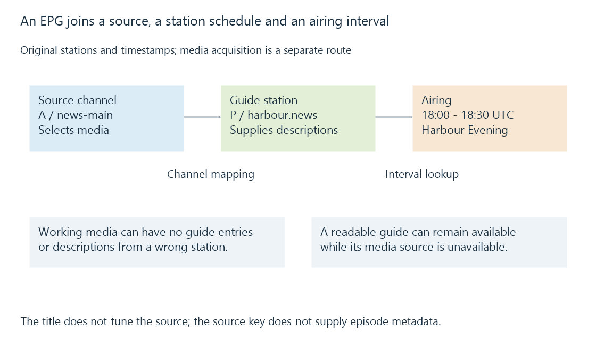

Electronic programme guides
An electronic programme guide associates stations and time intervals with programme descriptions, supplying the schedule information used for browsing and programme-based recording.
You can have a clear live picture and an empty guide. The video arrived through a working source, but the server has no usable programme description associated with that channel and time.
An electronic programme guide, or EPG, supplies those descriptions: what is scheduled, on which station and when. A grid is one way to present the data. Search results, programme detail pages and recording choices are other views of the same schedule.
Three inputs meet in a guide row
The source lineup identifies the service Emby can acquire. A guide station identifies the schedule to display. A programme entry identifies an airing within that schedule.

For example, a fictional source exposes (A, news-main). Its selected guide station is harbour.news. That station has an airing called Harbour Evening from 18:00 to 18:30 UTC.
The programme title does not tune the source. The source key does not provide the episode description. Channel mapping supplies the association between the two inventories.
This separation explains three different symptoms:
| Observation | Association or input to examine |
|---|---|
| Correct channel, no programme entries | Guide coverage, loaded schedule and station mapping |
| Correct channel, another station’s programmes | Source-to-guide station mapping |
| Correct programme descriptions, unavailable picture | The channel’s media acquisition and delivery |
A guide entry can remain readable during a source outage because it is descriptive data, not a test of the current stream.
“Now” selects an interval
Use these original adjacent entries for one station:
| Programme | UTC interval |
|---|---|
| Harbour Evening | [18:00,18:30) |
| Coast Weather | [18:30,18:40) |
At 18:29:59, the first entry applies. At 18:30:00, the second applies. The half-open convention includes each start and excludes its end, avoiding an artificial overlap at the shared boundary.
XMLTV explicitly uses this convention when both start and stop are supplied. A receiver or imported guide still needs to interpret its particular data format correctly.
The guide’s “current programme” comes from the schedule and clock comparison. The media can be delayed by acquisition, distribution or playback buffering; the picture on screen may still belong to the previous interval. Live TV develops that continuing media timeline.
A schedule entry can become a recording request
Choosing Record supplies the intended programme and channel to the recording workflow. Emby’s developer documentation distinguishes programmes, individual timers and persistent series timers.
The resulting timer must retain acquisition times and an actual source selection. Its programme association adds useful identity and descriptions; creating that association does not reserve every resource or prove that the programme was captured.
A later schedule update can move the airing. A successful recording can also include material before or after its nominal interval through padding. The guide interval, requested capture interval and resulting stored media therefore have different boundaries.
The visible horizon is finite
A guide only shows events supplied by its provider and loaded by the server. An empty week beyond that horizon does not establish that the station has stopped broadcasting.
Increasing the loaded horizon can expose more future airings when the provider has supplied them. It cannot create missing entries or update a stale source.
See Also
- Channel lineups and source identity
- Mapping source channels to guide stations
- Programme identifiers: airings, episodes and series
- Recording timers and acquisition deadlines